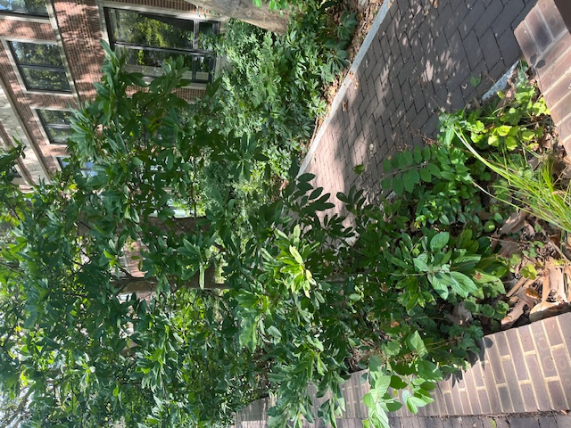

As part of my daily tasks as an office manager working at Lauder, I get to take care of the relaxation room and the plants in it. However, as we approach winter break there’s a 28 day gap where I’m not able to water them. I really don’t want the to die so I’ve asked Gemini what I can do!
A tricky situation
Leaving plants unwatered for a full month can be fatal for many types, but there are several strategies you can employ to maximize their chances of survival.
Here is a plan for what to do before, during, and after your month-long absence:
💧 Pre-Departure Plant Care (The Week Before)
Focus on maximizing water retention and minimizing water loss.
- Deep Watering: Give all your plants a very thorough watering right before you leave. Let the water soak through completely and drain out of the bottom. This ensures the soil profile is fully saturated.
- Move to a Cooler, Dimmer Location: Move the plants out of direct sunlight and away from heat sources (like radiators or vents).
- Reason: Lower light and cooler temperatures slow down the plants’ metabolism and reduce transpiration (water loss through leaves). A room with north-facing or indirect light is ideal.
- The Pebble Tray Method: Place the potted plants on trays filled with pebbles and a little water (making sure the bottom of the pot is above the waterline).
- Reason: As the water evaporates from the tray, it creates a slightly more humid microclimate around the plant, slowing down water loss from the leaves.
- Prune Dead or Yellowing Leaves: Remove any dying or unhealthy foliage.
- Reason: These parts are a drain on the plant’s resources and will not photosynthesize anyway.
🛠️ Survival Strategies for a Month (Choose One or More)
These methods provide a slow, continuous supply of water.
1. The Plastic Bag/Terrarium Method (For Smaller Plants)
- Water the plant thoroughly.
- Place the entire potted plant inside a clear plastic bag (like a garbage bag or a clear dry-cleaning bag).
- Blow into the bag to inflate it slightly, then seal the opening with a twist tie.
- Crucial Step: Place the bagged plant in an area with bright, but indirect light.
- Reason: This creates a mini-greenhouse environment that recycles the moisture. Water evaporates from the soil and leaves, condenses on the plastic, and drips back down to the soil.
2. The Wicking/Siphon System
- Find a large container (like a bucket or a large jug) that is taller than your plant pot.
- Place the container next to the plant pot and fill it with water.
- Take a thick piece of cotton rope or nylon wicking material.
- Submerge one end of the wick deep into the plant’s soil (you may need to poke a hole with a pencil).
- Submerge the other end of the wick into the water reservoir.
- Reason: Capillary action will slowly draw water from the reservoir up the wick and into the soil, providing a continuous drip feed. You’ll need a very large reservoir for a month.
3. DIY Drip/Spike Systems
- There are commercially available slow-release watering spikes (often ceramic or terra cotta cones) that you fill with water or attach to a wine bottle filled with water, which slowly seeps into the soil.
- You can also try a homemade version using a plastic bottle with small holes poked in the cap, inverted and stuck into the soil.
✅ Post-Absence Recovery
The plants will likely be stressed, but here’s how to help them bounce back.
- Immediate Check-up: Check the soil. If it’s completely dry and the leaves are drooping, give it a moderate drink—don’t fully saturate the soil immediately, as this can shock the roots. Water slowly over a few hours.
- Gradual Light Reintroduction: Keep the plants in their lower-light location for a few days. Gradually move them back to their preferred spots to avoid “sunburn” or light shock.
- Remove Yellow/Brown Leaves: Once you’ve watered them, you can prune any leaves that have died back completely.
⚠️ A Note on Plant Type: These methods work best for durable, moisture-retaining plants like Pothos, Snake Plants (Sansevieria), ZZ Plants, or Philodendrons. If you have high-water-demand plants (like ferns or tropical bloomers), they may not survive a month, even with these precautions.
Would you like me to look up which of your specific plant types might be the most challenging to keep alive for a month without water?